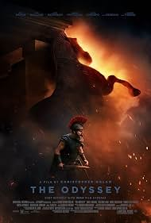
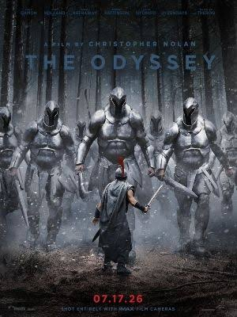
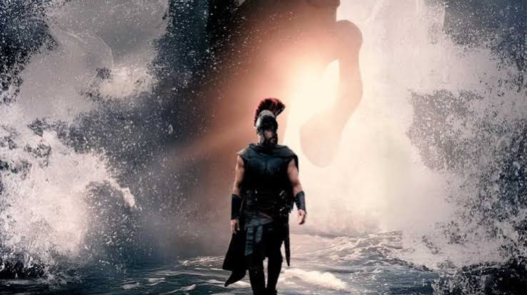
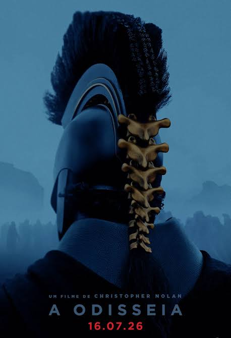
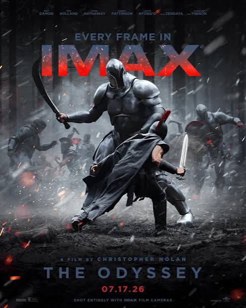
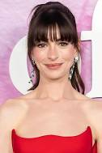

Uma das histórias mais antigas da literatura ocidental ganha uma adaptação cinematográfica pelas mãos do cineasta Christopher Nolan. A Odisseia é um poema épico atribuído a Homero que acompanha as aventuras do herói grego Odisseu (Matt Damon) em sua volta para casa após a Guerra de Troia, tendo que cruzar todo o mar Mediterrâneo. O guerreiro enfrenta criaturas míticas e deuses em sua jornada épica de retorno onde sua esposa Penélope (Anne Hathaway) o aguarda. O rei de Ítaca descreve sua trajetória esbarrando com seres como o Ciclope Polifemo, as sereias e a feiticeira/deusa Circe.




O protagonista, aquele que deve cruzar o mar para voltar para casa.
Aquela que assumiu o governo de Ítaca enquanto seu marido estava na guerra.

O filho de Odisseu, que luta para proteger sua mãe e restabelecer a ordem em Ítaca.
A deusa da sabedoria e da guerra, que auxilia Odisseu em sua jornada, porém também serve como imagem simbolica de seus traumas.
Maior lider grego presente na guerra e aquele que ensina uma lição bastante valiosa para que Odisseu retome o controle de seu reino.
Uma grande antagonista, mas que também ajuda Odisseu a se reencontrar com o guia no submundo, que o lhe aconselhará.
Principal antagonista e pretendente da esposa de Odisseu, também aquele que organiza os barbáros que sugam os recursos de sua casa.
Um marcante antagonista que inaugura a sequência maravilhosa de acontecimentos da jornada de Odisseu.